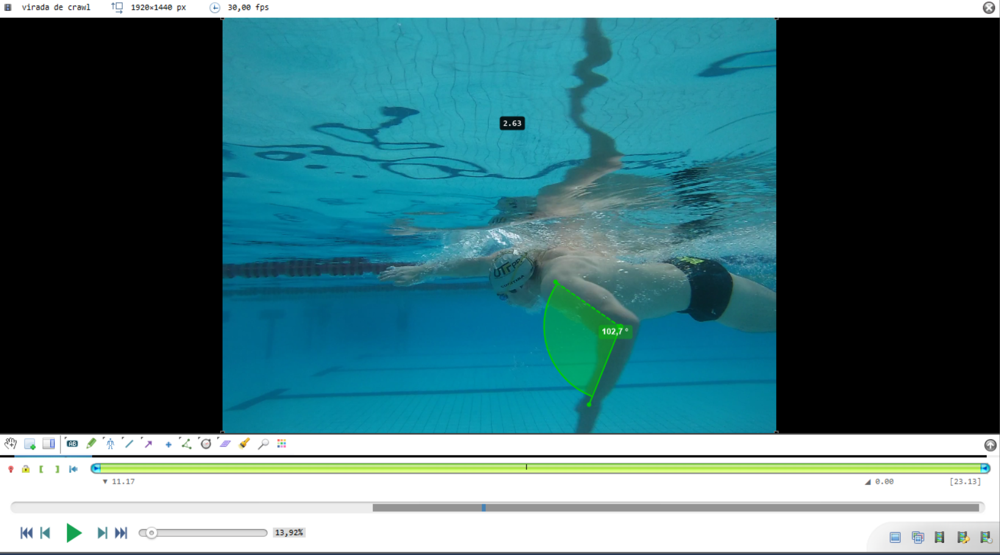
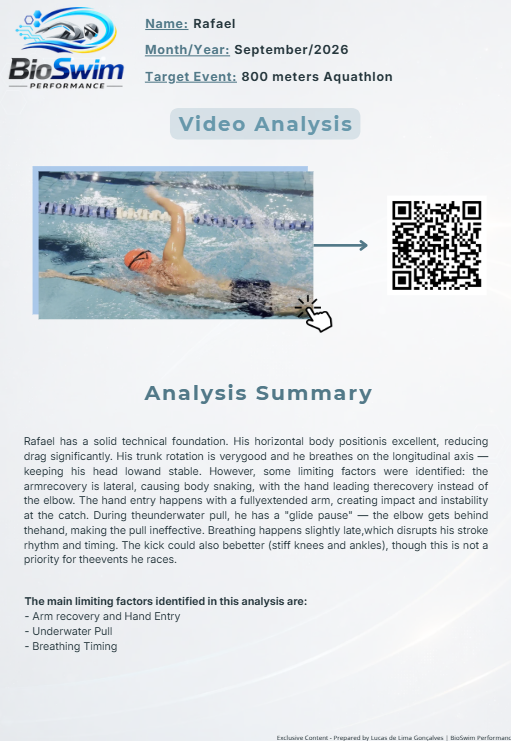

Send Your Videos
You record yourself swimming according to my simple protocol (underwater & above water). Share via Google Drive or secure upload.
Stop guessing what's holding you back. Our biomechanical analysis identifies the key limiting factors in your stroke and gives you a clear roadmap.
No more conflicting corrections. Just clear priorities per cycle — so you actually improve.
12-week program. 3 analyses. Clear progress tracking. You'll see measurable improvement in your swim.
Start Your Analysis Now →🔬 Used by competitive swimmers & triathletes • Data-backed methodology

You get conflicting corrections from different coaches and don't know what to prioritize.
Shoulder pain is limiting your training — and you don't know why.
You train hard but don't see measurable progress in your swim times.
You're spending too much time guessing what to fix instead of training effectively.
The problem isn't lack of training. It's lack of direction. You don't need more volume — you need the right focus.

Every swimmer has a unique stroke pattern. The key is identifying what's actually limiting your efficiency.
That's what BioSwim does — I turn simple videos into objective, actionable data for YOU.
No more "I think you need to rotate more." Instead: "Your left elbow drops on entry, increasing drag. Here's the exact drill to fix it."
My 12-week program delivers:
How many issues will we address? It depends on your stroke. Some swimmers need to fix 2–3 errors over 12 weeks; others may need 4–5. I adapt to what YOU actually need.
You record yourself swimming according to my simple protocol (underwater & above water). Share via Google Drive or secure upload.
Using Kinovea and biomechanical models, I identify the main limiting factors in your stroke — from catch mechanics to body roll to shoulder stress.
I deliver a video breakdown + PDF report with your priorities, specific drills, and progress benchmarks for the next 12 weeks.
At week 6 and week 12, I re-analyze your stroke. You'll see exactly what improved, what's next, and prove your investment is paying off.

No more guesswork. You get data-driven insights so you can focus on what matters — improving.
See exactly how I break down stroke mechanics and identify what's limiting each swimmer's performance.
⏱️ 5-minute breakdown • Real athlete example

Get the clarity you need to improve. Three analyses over 12 weeks — each one focused on the most impactful changes you can make.
or 3 x $69 (no interest)
✅ 100% Satisfaction Guarantee
Not happy with your analysis? I'll refund 100% — no questions asked.
Secure payment via Wise (credit card or bank transfer)
Questions? Email me at bioswimperformance@gmail.com